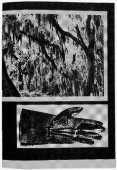

SYMBIOTISCHE RELATIE
DE HYBRIDE AMBACHTELIJKHEID BINNEN HET BOEK
FAY ASSELBERGS
SYMBIOTISCHE RELATIE
DE HYBRIDE AMBACHTELIJKHEID BINNEN HET BOEK
FAY ASSELBERGS
Inhoudsopgave
Inleiding
1. Waarom heeft ambachtelijkheid een stoffig imago
en wat is de werkelijke betekenis ervan?
2. Een blik op de geschiedenis van ambacht
3. Ambacht als tegenbeweging
4. Ambacht als concept en de opkomst van
het digitale ambacht
5. Ambacht, het boek en de invloed van de computer
en het internet
6. Wat is de rol van het boek tegenwoordig en hoe
manifesteert ambacht zich daarbinnen?
Conclusie
Abstract
Bronnenlijst
HALLO
Inleiding
Tastbaarheid, tactiliteit, de geur van inkt, papier en de structuur. Het zijn voor mij voorbeelden van kerneigenschappen die grafisch ontwerpen waardevol maken. Er zit ambacht en tijd in. Er is geworsteld met het materiaal en er zijn fouten gemaakt die er misschien voor hebben gezorgd dat ogen werden geopend en er beter werk uit is voortgekomen. Het vak verandert, en als grafisch ontwerpstudent ga je bewust dan wel onbewust mee met de tijd. Hoeveel uren zit je niet achter je laptop? Je handen de hele dag op het toetsenbord, en al klikkend probeer je grafisch ontwerper te worden. Met vierkante ogen en ver verwijderd van het originele formaat waarin je werkt probeer je in een rap tempo zoveel en zo goed mogelijk werk af te leveren.
Als grafisch ontwerp student ben je vandaag de dag veelzijdig aan het werk. Waar men voorheen bij grafisch ontwerpen voornamelijk dacht aan drukwerk is het tegenwoordig veel meer dan dat. Denk aan video-installaties, performances, werk door middel van artificial intelligence en zelfs een panorama met schilderkunst. Grafisch ontwerpen is heterogeen, zoals de Koninklijke Academie van Beeldende Kunsten dat mooi verwoordt op hun website.1. Grafisch ontwerpen, General information1
Zolang het past bij een sterk concept en het goed wordt gecommuniceerd kan het in elke mogelijke vorm worden gegoten. Het ontwerpen van digitaal werk is nu net zo gangbaar als analoog werk. Sinds een aantal jaar wordt Coding als vak gegeven en leren wij, studenten, het ambacht van HTML. Of mag HTML geen ambacht worden genoemd? Is ambacht enkel het uitvoeren van analoge technieken met je handen? Ik vraag mij af of dat niet een achterhaald concept is. Is ambacht niet net zo heterogeen als grafisch ontwerpen? En wat betekent digitale ambacht voor de traditionele ambachtsvormen?
Aangezien ambacht binnen grafisch ontwerpen nogal breed is, wil ik mij focussen op het digitale en analoge ambacht binnen het boek. Ik kies voor het boek vanwege zijn lange geschiedenis en mijn voorliefde voor het medium. Ik ben benieuwd of de manier waarop we boeken maken over de jaren is veranderd. Door nieuwe technische ontwikkelingen en wellicht het verloren gaan van oude technieken vraag ik mij af of analoge en digitale ambachten elkaar nodig hebben. Kunnen deze twee werelden elkaar versterken? Mijn hoofdvraag in deze thesis is daarom: waaruit blijkt de symbiotische relatie tussen analoge en digitale ambachtelijkheid binnen het boek? Om beter te begrijpen hoe we tegenwoordig bezig zijn met ambacht binnen het boek wil ik onder andere een blik werpen op de geschiedenis van ambacht. Hoe zag ambacht er 20, 50 of 100 jaar geleden uit? Wat voor gedachtes had men toen over dit onderwerp? Aan de hand van casestudies wil ik laten zien waar we vandaan komen. Is ambacht altijd de manier waarop het gemaakt wordt of kan het ook gezien worden als conceptuele keuze? En hoe manifesteert ambacht zich in een digitaal tijdperk? En wat betekent dat voor de toekomst van de analoge/traditionele ambachtsvormen?
HALLO
Waarom heeft ambachtelijkheid een stoffig imago en wat is de werkelijke betekenis ervan?
1
Ambacht lijkt niet het meest sexy woord te zijn, op de een of andere manier zien we meteen een stoffig beeld voor ons: gebreide kleedjes, pottenbakken en oude drukpersen die alles behalve snel werk afleveren. Maar gaat design en ambacht niet hand in hand? In het Dikke van Dale woordenboek wordt ambacht omschreven als: “vak waarbij je iets met de hand maakt”.2. Betekenis ambacht, 20162 Het zegt dus niks over de techniek en of het analoog of digitaal gemaakt is. Het zegt wel iets over de kennis en de vaardigheid die je hebt met het ambacht. Ambacht is ook wel vakmanschap. Met ambacht beheers je een vak en daarmee een techniek. Maar als grafisch ontwerper ben je vaak een veelzijdig vakman waarin je werkt met verschillende technieken. Zowel analoog als digitaal. Het woord ambacht dateert uit een analoge tijd. Digitaal wil zeggen dat het door de computer verwerkt kan worden.3. Kernerman Dictionaries, Digitaal3 Analoog is het tegenovergestelde en is tastbaar. Maar hoe komt het dan dat we er nog steeds een ouderwets gevoel bij krijgen? Ambacht is vaak traditie gerelateerd, en werd van meester aan leerling overgedragen of van vader op zoon. Hoe zullen de oude en nieuwe tradities zich samen ontwikkelen?
David Crow vraagt zich in zijn essay Magic Box: craft and the computer af waarom we nog steeds zo weinig waarde hechten aan het woord ambacht. In zijn essay schrijft hij dat vóór de georganiseerde industrie alles ambachtelijk werd gemaakt. In de Middeleeuwen hadden ambachtslieden aanzien en status. Maar sinds machines het werk begonnen over te nemen, werd de hand steeds minder gewaardeerd.4. David Crow, Magic Box: craft and the computer, 2008 Eye Magazine 4 Die waardering is volgens kunstenaar en schrijver Cornel Bierens weer terug en ambacht heeft een comeback gemaakt in de kunst de afgelopen jaren. De strenge conceptuele benadering van de vorige eeuw is minder belangrijk en we kunnen ons weer gaan focussen op de esthetische kant van kunst.5. Cornel Bierens, 2013, De Handgezaagde Ziel5 Maar geldt dit ook voor grafisch ontwerpen? De afgelopen honderd jaar zijn er verscheidene technieken op de achtergrond geraakt en nieuwe technieken bij gekomen. De website Printing History heeft alle technieken vanaf het begin dat er papier werd gemaakt op een rijtje gezet.6. History of printing timeline6 Opvallend is dat vanaf 1860 drukken steeds opnieuw lijkt te worden uitgevonden. Constant op zoek naar vaak een snellere en efficiëntere manier van drukken. Om te kijken hoe we de afgelopen honderd jaar met ambacht zijn omgegaan, wil ik door middel van casestudies de verschillen onderzoeken. Waren er bijvoorbeeld tegenbewegingen of stromingen te zien? De casestudies zijn vooral gericht op het boek maar kunnen worden besproken in een grotere context in een relatie tot andere kunstenaars/ontwerpers uit die tijd.
HALLO
Een blik op de
geschiedenis van het ambacht binnen het boek
2
De term “grafisch ontwerp” werd voor het eerst gebruikt in 1922 door William Addison Dwiggins.7. Design is History, William Addison Dwiggins7 Dit betekende echter niet dat grafisch ontwerpen pas rond die tijd voor het eerst werd beoefend. The Diamond Sutra uit 868 is het oudste voorbeeld van een boek.8. Jeremy Norman, The Earliest Surviving Dated Complete Printed Book8 Het is gemaakt met een blokdruk techniek ook wel boekdruk techniek genoemd.
9. In het Engels: Woodblock printing9 Deze heilige Boeddhistische Soetra is vijf meter lang en 27 centimeter breed.
10. Wikipedia, Soetra10 De Chinese techniek waarmee het boek is gemaakt dateert uit 220 maar werd pas in de eerste helft van de vijftiende eeuw in Europa uitgevonden. Waar boeken in eerste instantie voornamelijk voor religieuze doeleinden werden gemaakt, begonnen drukkers zich steeds meer te gedragen als uitgeverijen en verzamelden zij teksten om boeken voor elk wat wils te maken.11. Milan van Lange, Totstandkoming van de boekdrukkunst, 201311 Tot nu toe was elke vorm van grafische kunst nog niet reproduceerbaar geweest tot de houtsnede. De Duitse filosoof Walter Benjamin is kritisch in zijn essay Het kunstwerk in het tijdperk van zijn technische reproduceerbaarheid over de reproduceerbaarheid van (grafische) kunst. Waar de houtsnede nog een enorme verandering was voor de boekdrukkunst en daarmee de literatuur, is de ontwikkeling van de lithografie begin 19e eeuw een fundamentele nieuwe fase. “Het zeer veel bondiger procédé, dat het aanbrengen van de tekening op een steen onderscheidt van het snijden van de tekening in een houtblok of het etsen ervan in een koperplaat, gaf de grafische kunst voor het eerst de mogelijkheid haar produkten niet alleen massaal (zoals tevoren), maar in dagelijks nieuwe vormen op de markt te brengen. Door de lithografie werd de grafische kunst in de gelegenheid gesteld het leven van alledag met illustraties te begeleiden. Zij begon gelijke tred met het gedrukte woord te houden. In dit begin werd zij echter reeds enkele decennia na de uitvinding van de steendruk overvleugeld door de fotografie.”12. Walter Benjamin, Het kunstwerk in
het tijdperk van zijn technische reproduceerbaarheid, 1936 12
Benjamin klinkt wantrouwend over de nieuwe lithografische techniek: het begin van massaproducties en daarmee een ondergang van authenticiteit en uniciteit. In mijn ogen is het minder zwart wit dan hij beweert en was het een manier om kennis over te brengen aan verschillende niveaus in de samenleving. Ineens konden er kinderboeken worden gemaakt met prachtige prenten en werden posters door de straten in de steden gehangen. Lithografie heeft de grondslag gevormd voor de manier hoe we vandaag de dag met drukwerk omgaan. De offset druktechniek is decennia oud maar wordt steeds verfijnder, sneller en meer geautomatiseerd. Ondanks die verbeteringen is de techniek nog steeds gebaseerd op de lithografie. De drukker Niels Geerlof van drukkerij robstolk® vertelde mij in een gesprek over de techniek dat kennis en ambacht nodig zijn om met deze machines te werken. Zonder die kennis kan het drukwerk niet gemaakt worden. De vraag of de techniek zal verdwijnen lijkt ondenkbaar. Het feit dat tweederde van al het drukwerk wereldwijd nog steeds gedrukt wordt door offset machines geeft aan dat de kwaliteit zich telkens verbeterd, de techniek zich blijft ontwikkelen en dat de mogelijkheden eindeloos zijn met offset drukken.13. Wikipedia, Offset13
HALLO
Ambacht als tegenbeweging
3
De Arts and Crafts beweging was een reactie op de gevolgen van de industrialisatie eind 19e eeuw.14. Victoria and Albert Museum, The Arts & Crafts Movement14 Zij streefde naar een herleving van ambacht die volgens aanhangers van de beweging verloren was gegaan door de Industriële Revolutie.15.Arts and craftsbeweging reactie op industriële revolutie15 De Kelmscott Press was de Engelse drukkerij van William Morris die hij oprichtte als tegengeluid op de geïndustrialiseerde tijd waarin hij leefde. Met deze drukkerij wilde hij de vaardigheid van de hand weer tot leven wekken. Morris speelde een grote rol binnen de Arts and Crafts beweging en drukte maar liefst 50 boeken, waarvan hij er enkele zelf schreef. Hij ontwierp zelf het lettertype, maakte zijn eigen papier en drukte de boeken met de hand. Ook gebruikte hij als eerbetoon teksten van zijn favoriete middeleeuwse auteurs zoals: Samuel Taylor Coleridge, John Keats, Percy B. Shelley, Alfred Tennyson, Dante Gabriel Rossetti en A.C. Swinburne. De boeken van de Kelmscott Press waren erg duur en ontworpen om langzaam te lezen, te waarderen en te koesteren.16. David Cody, Morris and the Kelmscott Press, 201416 Het boek The Works of Geoffrey Chaucer uit 1896 wordt gezien als de triomf van Morris. Het was het meest ambitieuze project dat Morris in de laatste jaren van zijn leven maakte.
Het duurde vier jaar voordat het boek af was. Morris ontwierp het lettertype, de decoratieve initialen en de pagina lay-out. Zijn goede vriend Edward Burne-Jones ontwierp de illustraties.17. William Morris Gallery, The Works of Geoffrey Chaucer (1896)17 De maar liefst 87 geïllustreerde houtsnedes waren gegraveerd door William Harcourt Hooper. Het boek kostte in die tijd twintig pond en er waren 425 exemplaren van gemaakt. Ook waren er nog luxere varianten die nog duurder waren. Dit boek is een goed voorbeeld van ambacht in zijn traditionele vorm, maar laat ook zien dat Morris bleef hangen in “die goede oude tijd”. Het ontwerp en het proces van het maken van het boek moest en zou lijken op de manier hoe boeken werden gemaakt in de Middeleeuwen wat volgens Morris de gouden eeuw voor boekontwerp was.
Lijnrecht tegenover de Arts and Crafts beweging stond het Futurisme. In 1909 kwam het Futurist Manifesto uit, een manifest geschreven door de Italiaanse poëet Filippo Tommaso Marinetti dat een afzetting was tegen het verleden en een viering van de snelheid, de machines, de industrie, het geweld en de jeugd.18. Words in Freedom: Futurism at 10018 Meer dan honderd jaar geleden was er dus een schreeuw om snelheid en industrie, eigenlijk alles wat ambacht in haar oorspronkelijke betekenis niet is. Aanhangers van het futurisme adoreerde de geïndustrialiseerde samenleving. De elektriciteit was net uitgevonden en de wereld veranderde in een hoog tempo. Het futurisme was een protest tegen alles wat oud en traditioneel was. Niet alleen schrijvers werden er door beïnvloed, maar ook kunstenaars, architecten, muzikanten en filmmakers. Het boek Depero Futurista wordt gezien als een van de eerste moderne kunstenaarsboeken. Allereerst is het boek niet op traditionele wijze gebonden maar werd het boek bij elkaar gehouden door twee industriële aluminium bouten. Daarom wordt het boek ook wel “The Bolted Book” genoemd. Fortunato Depero publiceerde in 1927 het boek vol met revolutionaire ideeën. De typografie was speels en dynamisch.19. Claire Voon, Reprinting ‘Depero Futurista,’ the First Modern Artist’s Book, October 8 201619 Ondanks de thematiek voelt het boek zeer ambachtelijk aan: zo is elke pagina handgemaakt, voorzien van tekeningen en is zijn handschrift erin verwerkt. Er zijn ook niet meer dan 1000 exemplaren van Depero Futurista gemaakt. In het essay Het boek in de kunst – Een provocatie van de tijd van kunstcritica Roos van der Lint beschrijft Lint de hybride tak in kunstenaarsboeken. Daarin is het opvallend dat we tegenwoordig digitale content in boeken willen verwerken. Hybride wil zeggen dat er sprake is van een kruising tussen twee of meerdere genres die wezenlijk van elkaar verschillen. Je zou Depero Futurista kunnen zien als een voorloper van een hybride kunstenaarsboek. Het thema is industrieel, machinaal en toekomstgericht. De content is zeer vernieuwend ontworpen en zelfs de binding heeft een conceptuele oplossing gekregen. Toch is het boek geheel gedrukt op een pers die niet perse vernieuwend was voor die tijd. Ook de keuze om het werk in een boek te vertalen was geen vooruitstrevende en industriële keuze.
HALLO
Ambacht als concept en de opkomst van het digitale ambacht
4
Massaproductie kreeg een steeds grotere rol in de Westerse samenleving. Kunstenaars reageerden hier op en gebruikten technieken om hun conceptuele werken vorm te geven. De waardering voor kunst werd een intellectuele ontwikkeling. En de tools die geassocieerd werden met ambacht waren niet meer dan nostalgie.20. David Crow, Magic Box: craft and the computer, 2008 Eye Magazine20
In 1959 bracht Xerox de Xerographic Office Photocopying uit, een apparaat dat door middel van fotografische technieken beeldmateriaal kon kopiëren. De conceptuele kunstenaar Seth Siegelaub maakte in 1968 het Xerox Book. Siegelaub vond dat een tentoonstelling een breder begrip was en dat een boek net zo goed een plek voor een tentoonstelling kon zijn als een ruimte in een museum.21. Stedelijk Museum Amsterdam,
Seth Siegelaub: beyond conceptual art 12 december 2015 - 17 april 201621 Hij vroeg zeven kunstenaars (Carl Andre, Robert Barry, Douglas Huebler, Joseph Kosuth, Sol LeWitt, Robert Morris en Lawrence Weiner) om mee te doen aan de tentoonstelling. Ze werden gevraagd allen 25 pagina’s in te vullen met eigen werk dat reageerde op het kopieer medium. De door de kunstenaars gemaakte werken werden vervolgens gekopieerd en in het boek opgenomen. De bedoeling was dat het boek ook gekopieerd zou worden, ook wel ‘xeroxed’ genoemd. Maar het proces bleek te duur te zijn en de eerste druk van 1000 werd geproduceerd door de offset techniek. Het lijkt wel alsof de ambacht van reproductie in moderne vorm nog te vooruitstrevend was en de kosten daarvan te hoog waardoor er werd teruggegrepen naar een oudere vorm van reproductie. Conceptuele kunstenaars leken wel in de ban te zijn van de massaproductie en het kapitalistische gedachtegoed. Ambachtelijkheid werd ingezet als industrie, fabrieksmatig veel maken om een statement te maken. De koning van reproductie en het reageren op de massa cultuur was natuurlijk Andy Warhol, die met een zeefdruktechniek werkte die voorheen nog niet ‘mainstream’ was. Eigenlijk laten de kunstenaars en ontwerpers in de jaren zestig zien dat een techniek ook als concept kan worden gezien. Ze hebben het beginsel gevormd om de verschillende werelden van technieken te combineren en daarmee een moderne draai aan het ambacht te geven.
Tijdens de jaren ‘50 en ’60 werd het kunstenaarsboek steeds populairder. De Zwitserse kunstenaar Dieter Roth wordt gezien als de uitvinder van het kunstenaarsboek. Hij maakte talloze boeken. In de jaren ’50 begon Roth met het maken van boeken en besloot voor zichzelf dat een boek niet perse een bindwijze, een verhaal, een tekst of een afbeelding moest bevatten.22. Andrew M. Goldstein, MoMA Curator Sarah Suzuki on How Dieter Roth Invented the Artist's Book, June 20, 2013 22 Roth was een van de eerste die het boek zag als het kunstwerk zelf.23 Zijn benadering van het boek was zeer conceptueel. Hij maakte gebruik van bijna elke mogelijke techniek die er bestond en was niet bang deze met elkaar te verbinden.23. Museum of Modern Art, Dieter Roth Roth was een van de eerste die het boek zag als het kunstwerk zelf.24 Dieter Roth Foundation, The prints, 2016 24 In een interview met de curator van het MoMa New York, Sarah Suzuki, vertelt Suzuki over de hybride kant van Roth. Ze haalt het interview van Roth met Dr. Ira Wool aan waarin hij uitleg gaf over de verdeling van zijn boekprojecten: het non-verbale, de projecten strikt visueel zoals Bok 8c of Children’s book en de boeken die meer tekst gericht zijn zoals Scheisse uit 1965. Naast deze drie projecten bestaan er nog de projecten die hij “hybride” noemt.25. Andrew M. Goldstein, MoMA Curator Sarah Suzuki on How Dieter Roth Invented the Artist's Book, June 20, 201325
Toen Roth werd gevraagd in te vallen voor de lessen van Hansjörg Mayer op de Watfort School ontstond het concept om een boek te maken met het thema: “Recept voor een boek zonder thema/onderwerp”.26. The Museum of Modern Art, New York Essays by Dirk Dobke, Theodora Vischer and Bernadette Walter 2010, Roth Time: A Dieter Roth Retrospective, pagina 11426 Het kunstenaarsboek Little Tentative Recipe van Dieter Roth uit 1969 bestaat uit ongeveer 800 offset-lithografieën in kleur.27 Hij liet het drukken door zijn studenten op velijnpapier in een oplage van 100.28 27. Bloomsbury, Dieter Roth (1930-1998) - Little Tentative Recipe the book, 1968-1969, comprising numerous offset- Het boek heeft een koptische binding en heeft een houten kistje als behuizing met de naam en de titel van de maker erop.Zijn oeuvre aan boeken heeft altijd een ambachtelijk en persoonlijk gevoel. Of hij er nou eigenhandig in heeft getekend,28. Dieter Roth Foundation, 1966 to 1971 GermanyURL handmatig erin heeft gesneden of technieken door elkaar heeft weten te verweven, hij laat zien dat de inhoud van het boek net zo ambachtelijk kan zijn als het boek zelf.
HALLO
Ambacht, het boek en de invloed van de computer en het internet
5
Het kunstenaarsboek werd vanaf de jaren ’60 een genre op zich. Tijdens de jaren ’80 en ’90 van de vorige eeuw werd het boek meer en meer gebruikt door kunstenaars als een medium voor zelf-expressie. De technieken bleven gevarieerd en gingen van traditioneel tot experimenteel.29. Victoria and Albert Museum, Artist books29 Begin jaren ’90 ontstond het internet, met in 1992 maar liefst 26 websites online. Je kan je haast niet voorstellen hoe snel dat in 25 jaar tijd is gegroeid. Maar hoe heeft die nieuwe en onbekende wereld invloed gehad op grafisch ontwerpen? Hoe zag het boek eruit in de jaren ’90? En betekende deze digitale stroming een nieuwe tak van ambacht?
De computer bestond al enige tijd, maar ontwikkelde zich net zo snel als het internet jaren laat zou doen. In het boek The end of Print is voor het eerst een collectie van het werk van David Carson te zien. Hij wordt gezien als een van de belangrijkste ontwerpers van de jaren ’90 omdat hij de traditionele regels brak. De publicatie bevat 350 afbeeldingen van zijn werk en een interview met Carson.30. Lewis Blackwell, 1995, The End of Print:
The Graphic Design of David Carson30 Het glossy papier zal wel zijn gekozen vanwege zijn werk voor verschillende tijdschriften. Persoonlijk vind ik het altijd wat koud aanvoelen, maar dit is wellicht tijdgerelateerd zijn. Carson’s werk is zo divers en het analoge en digitale gevoel gaan hand in hand dat dit een goed voorbeeld is van twee werelden die samen komen en elkaar versterken. De achterkant van de cover is bijvoorbeeld gemaakt door de letterpress techniek.31. Lewis Blackwell, 1995, The End of Print: The Graphic Design of David Carson, Back cover: letterpress. KSU 1995 by DC31 Onderwijl maakte hij gebruik van verschillende digitale DTP programma’s zoals Pagemaker, QuarkXpress en Illustrator om te experimenteren met vervormde en overlappende lettertypes en integreerde dat met fotografische afbeeldingen.32. Design:Talkboard, Famous graphic designers, typographers and creatives32 Zijn letter composities doen soms denken aan het werk van H.N. Werkman zoals het werk MD 231 uit 1924. Naast het boek is er een film bij gemaakt die hij de gelijknamige titel gaf: The End of Print.33. David Carson: Design and discovery, TedEx, Filmed February 2003 at TED200333 In een TedEx presentatie uit 2003 vertelt Carson over zijn samenwerking met de William Burroughs. Toen hij Burroughs voor het eerst sprak over een eventuele samenweringen zei Burroughs dat hij niet geloofde dat het the end of print was. Carson vond dat prima en wilde hem graag bij zijn project betrekken. Aan het eind van de film verteld Burroughs dat hij ooit naar een tentoonstelling ging die de titel “Photography: the end of painting” had. Het is bizar dat we het gevoel hebben dat wanneer andere technieken opkomen de technieken van daarvoor zullen verdwijnen. In de jaren ‘90 hadden de meeste mensen klaarblijkelijk het gevoel dat er een eind van een tijdperk aangebroken was en het boek langzaam zou uitsterven.
Het combineren van technieken werd wel vaker gedaan, kijk maar naar het voorbeeld van Dieter Roth, maar nog niet eerder ging de digitale en analoge wereld samen zoals David Carson deed. In 1996 kwam het boek SHV 1896-1996 uit. Het 11 centimeter dikke boek is ontworpen door Irma Boom en wordt tot de dag van vandaag gezien als een van de meest bijzondere boeken. “Dit vanwege de druktechnische hoogstandjes waarmee het is vervaardigd: laserdruk, perforaties, complexe rasters en andere in boeken zelden vertoonde vondsten”, aldus Meermanno Museum, huis van het boek. Irma Boom werkte zo’n vijf jaar samen met redacteur Johan Pijnappel aan het jubileumboek van Steenkolen Handels-Vereeniging en kostte ruim 1,3 miljoen.34. Meermanno Museum,
Moderne boekvormgeving Irma Boom: SHV 1896-199634 Het doet mij denken aan het lange proces van Wiliam Morris die vier jaar lang werkte aan The Works of Geoffrey Chaucer. De tijd die erin gestopt is kan al worden gezien als ambachtelijkheid. “Ambacht is tijd” verwoordt Cornel Bierens treffend in zijn essay De Handgezaagde Ziel. Net zoals het boek van William Morris werd ook dit boek van Irma Boom op speciaal papier gemaakt. Anders is natuurlijk de ambachtelijkheid die Morris in traditionele vorm verwezenlijkte. SHV is gedrukt door een combinatie van technieken waaronder laserprint, veekleurendruk, perforatie en bijzondere rasters. De combinatie van digitale en traditionele manier van drukken en printen is vernieuwend en versterkt elkaar. In een interview in de NRC vertelt Boom dat ze nooit begint op de computer wanneer ze aan het ontwerp van een boek begint. Ze ziet het boek als object en daarom moet het industrieel te produceren zijn.35. Dutch Heights, Johannes Vermeer Prijs 2014 Irma Boom35 Walter Benjamin zou waarschijnlijk een traantje laten bij die gedachte. Maar Irma zette door haar boeken zoals SHV het boek als object op de kaart.
In het juryrapport van De Best Verzorgde Boeken uit 1996 schrijft de jury dat het SHV boek “in alle opzichten zo buitenproportioneel is dat het een bijna onmogelijke opgave is het op eendezelfde manier te beoordelen als de overige ingezonden boeken”.36. De jury bestond uit: Hans Oldewarris, ontwerpers Anthon Beeke en Tessa van der Waals, boekhistoricus Frans A. Janssen en binder Ronald Widdershoven. Best Verzorgde Boeken, 199636 Ze noemen het een ware meesterproef. Ondanks het feit dat het boek alleen maar beschikbaar is voor een geselecteerd aantal mensen, de overige boeken liggen in een kluis, en er geen mogelijkheid is het boek te kopen kan je je afvragen waarom het überhaupt is ingezonden voor de Best Verzorgde Boeken. De jury zelf vraagt zich dat ook af en maakt een ironische opmerking wat er zou gebeuren als ze het boek niet zouden hebben geselecteerd. In het juryrapport proberen ze de technische innovaties te beschrijven. Waaronder de manier hoe het is gebonden, want hoe bind je een boek van 2136 pagina’s? Om ervoor te zorgen dat de pagina’s niet gaan uitvallen en mooi blijft open liggen hebben ze ontzettend veel geëxperimenteerd om daar een oplossing voor te verzinnen. Uiteindelijk kwamen ze tot de oplossing een metalen plaat te bevestigen die het boek verstevigt. Innovatie en ambacht gaan samen en heeft ervoor gezorgd dat Boom nog een conceptuele keuze kon maken. Want vanwege die metalen glimmende plaat heeft ze de jaartallen van SHV gedrukt. Het boek zit vol verrassingen en verschillende technieken en conceptuele keuzes. Boom is met dit boek een weg ingeslagen die ons tot de dag van vandaag inspireert en beïnvloedt. We combineren digitaal met analoog en bedenken innovatieve manieren om met het boek om te gaan. Het gehele boek straalt ambachtelijkheid uit, meerdere handen zijn er aan te pas gekomen en de mensen, naast Boom, hebben door hun kennis en vaardigheden zo’n knap staaltje werk kunnen afleveren.
HALLO
Wat is de rol van het boek tegenwoordig en hoe manifesteert ambacht zich daarbinnen?
6
Hansje van Halem is een voorbeeld van een ontwerper die ambacht zich eigen heeft gemaakt. Elk ontwerp begint met de hand. Inmiddels verwerkt ze de handgemaakte werken verder in de computer maar het startpunt is analoog. Ze is zo goed in haar analoge ambachtelijkheid dat het soms lijkt alsof het altijd digitaal is opgelost met een programma als Processing of Illustrator. Ze zegt zelf dat ze ambacht niet zo interessant vindt en dat het haar gaat om de techniek. “Ambacht vind ik een woord dat binnen het ontwerp de laatste 10 tot 15 jaar is gebruikt om een ouderwetse techniek aan te duiden”.37. Hansje van Halem, interview per email,
25 oktober 201637 Die ouderwetse kant van ambacht lijkt te blijven hangen. Toch kijkt ze op een interessante manier naar ambacht en lijkt geen onderscheid te maken tussen de analoge en de digitale wereld. Het gaat haar er vooral om dat je vat hebt op de techniek die je gebruikt. Haar boek Sketchbook bevat een verzameling van experimenten, structuren, texturen, letters en zelfs afgekeurde ontwerpen.38. Boeken over boeken,‘Sketchbook’ van grafisch ontwerpster Hansje van Halem bijna uitverkocht38 Er is een schijnbare tegenstelling tussen de titel van het boek en hoe het eruit ziet. Dit boek is zo keurig georganiseerd dat het woord schetsboek niet van toepassing lijkt. Je zou verwachten bij werk dat zo divers is en van analoog naar digitaal gaat dat het boek reageert op het handmatige en dat het schetsproces voelbaarder wordt. Het boek is digitaal geprint op 120 grams ongestreken Biotop papier. De keuze voor papier is met digitaal printen beperkter dan met offset drukken. Het Biotop papier is gekozen omdat het voor Van Halem refereert aan tekenpapier.39. Hansje van Halem, interview per email,
2 januari 201739 Hiermee probeert ze het gevoel van een schetsboek na te bootsen op een moderne digitale manier. Toch lijkt het boek meer over de inhoudelijke ambachtelijkheid te gaan. Deze monografie is openhartig en Van Halem is niet bang om alleen haar uitgewerkte werken naar voren te laten komen maar ook de mislukte projecten en de voorafgaande processen. Hiermee laat zij zien dat het ambacht een vak is waarbij je door fouten te maken en het combineren van technieken tot nieuwe inzichten komt. Van de hoeveelheid fouten die er eerst zijn gemaakt om tot dit resultaat te kunnen komen.
In tegenstelling tot Van Halem, die de computer juist wel betrekt in haar werk, zei de grafisch ontwerper en beeldend kunstenaar Louis Reith vaarwel tegen zijn carrière in de reclamewereld omdat hij naar eigenzeggen “knettergek werd van de computer”.40. Louis Reith, interview per email,
24 oktober 201640 Voor hem resulteert ambacht in een uniek fysiek object door middel van een menselijke handeling. In zijn tekeningen, collages, schilderijen en installaties richt hij zich op het grensvlak van vormgeving en kunst, en speelt hij met het contrast tussen digitaal/machinaal en analoog. Zijn zine Décor bevat collages van gevonden pagina’s uit tweedehands boeken. Dit kleine boekje van 24 pagina’s is eigenlijk een boek in een boek. Door de collages van boeken in een boekje te stoppen creëert Reith een nieuw verhaal.41. Shelter Press, Louis Reith ‘Décor (P, TG-AIH, TAHoS AE, PGaA ofUS, TF-OtHoJA, S:FaM)’41 Het boek is met een offset techniek in zwart wit gedrukt. Niet alleen zijn werk wat in deze publicatie te zien is, is ambachtelijk maar ook de manier waarop het gemaakt is. De binding en de druktechniek zijn tot stand gekomen doormiddel van moderne, ambachtelijke technieken. In combinatie met zijn handgemaakt collages lijkt het boekje een ware ode aan niet alleen het boek maar ook het ambacht. De meeste boeken die Louis Reith gebruikt voor zijn collages dateren uit de jaren ’60. Een tijd waarin de meeste boeken met een offset techniek werden gedrukt. De ambachtelijkheid blijft hier in zijn vertrouwde omgeving.
Van Halem en Reith gebruiken beide het boek als plek om hun ambachtelijkheid te kunnen laten zien. Beide betrekken ze op hun eigen manier het digitale in hun werk, Reith niet op de manier die voor Van Halem werkt. Maar wanneer het op het boek uitkomt hebben ze gelijkenissen. Ondanks dat Reith en Van Halem hun werk starten in analoge ambachtelijkheid komt er een punt dat zij het werk moeten digitaliseren om zo de vertaling naar het boek te kunnen maken. Hierbij komen de twee werelden, het analoge en het digitale, op een hybride manier samen en versterken zij elkaar door middel van het boek.
William Kentridge gebruikt boeken als canvas voor zijn werk. In tegenstelling tot Hansje Van Halem en Louis Reith die het boek als eindproduct gebruiken, draait Kentridge dat proces juist om en maakt van het boek zijn analoge startpunt om daarna een digitale vertaalslag te maken. In een interview in 2013 over zijn expositie “Second Hand Reading” in Marian Goodman Gallery New York, waar hij verschillende werken laat zien waaronder een zeer ambitieus flipboek met maar liefst 800 pagina’s, vertelde hij het boek te zien als een soort materiële voorstelling van iemands hoofd. Dat wil zeggen, van het aantal gedachten dat voorbij is gegaan zoals de zinnen in een woordenboek of encyclopedie.42. Brian Boucher, The Pages of a Mind: Interview with William Kentridge,
September 17, 201342 Zijn Second hand Reading is ambachtelijkheid in ambacht verwerkt, een goed voorbeeld dat de content van het boek net zo ambachtelijk kan zijn als het boek zelf. De prachtige tekeningen die door het boek gaan, de gekleurde vormen op pagina’s, de interactie van de vergeelde met tekst bedrukte pagina’s maken zijn werk naast het conceptuele verhaal een prachtig esthetisch object om naar te kijken. Maar het boek dient ook als verhaal, het heeft een begin en een einde, net als een film. Ook al bestaat er van het flipboek een film, het wordt jouw film wanneer je zelf door de pagina’s kan bladeren. Misschien is dat wel waarom het boek zo uniek is. Want elk exemplaar, en het maakt niet uit hoeveel dat er mogen zijn, gaat een relatie aan met de kijker. Het wordt op het moment dat je het boek openslaat jouw ervaring, omdat het is de meest oude vorm van interactie. Het boek krijgt een nieuw leven door de kijker. Daarom is het boek als kunstobject zo’n interessante ervaring omdat het eigenlijk niet vaak voorkomt dat je het (kunst)werk kan aanraken. Omdat Kentridge op de bladzijdes van het boek tekent is er een hele directe tastbaarheid van zijn werk te zien. De ambachtelijkheid ligt letterlijk op de bladzijdes. Hij kiest de boeken zorgvuldig uit en is op zoek naar vergeeld papier zodat het contrast van zijn witte pastel goed zichtbaar is.43. Brian Boucher, The Pages of a Mind: Interview with William Kentridge,
September 17, 201343 Hij beheerst het ambacht van het tekenen en animeren zo goed dat het doet lijken alsof Kentridge verschillende technieken gebruikt terwijl hij enkel werkt met potlood en krijt. Hij weet veelzijdig met zijn ambacht om te kunnen gaan en pagina voor pagina is elke laag zichtbaar aangebracht.
Maar wat gebeurt er als de content van het boek niks te maken heeft met de traditionele manier van ambacht? Als de maker van het boek geheel digitaal werk maakt en toch zijn werk graag in een boek wil laten vastleggen?
Onlangs bracht Spheres Publication een editie uit met werk van kunstenaar Rafaël Rozendaal die het internet gebruikt als zijn canvas. In samenwerking met ontwerper Philippe Karrer ontwierpen ze 96 pagina’s voorzien van Rozendaals werk, schetsen, een interview en still images. Het lettertype, ontworpen door Philippe Karrer, is geïnspireerd op het werk van Rozendaal.44. Desktop, Rafaël Rozendaal published in Spheres, July 19 201344 Niet eerder bracht Rozendaal zijn werk in drukwerk uit. Zijn werk is voornamelijk te zien op een internet browser. In de conferentie Here verteld Rozendaal dat hij zijn werk wat in de browser thuishoort naar een ander platform zoals een galerie verplaatst. “Het web is zo ontzettend snel en vloeiend dat je soms het beeld wil laten bevriezen om het zo intenser te kunnen beleven”.45. Rafaël Rozendaal (NewRafaël) From here to there, TNW Conference, 1 juni 201645 Cornel Bierens haalt in zijn essay de Belgische schilder Luc Tuymans aan. Op de vraag waarom er nog geschilderd zou moeten worden in deze tijd met zoveel snellere technieken zei Tuymans: “Omdat de traagheid zelf een medium kan zijn. In het schilderen is er een magische tijdverwerking. Het schilderij komt altijd te laat ten opzichte van de verbeelding van de kunstenaar. Het is een anachronisme, en precies daarin kan kunst opstaan”.46. Cornel Bierens, 2013, De Handgezaagde Ziel, pagina 27 46 Deze uitspraak zou je op het boek kunnen laten slaan. Waarom zou je überhaupt nog een boek willen maken als het internet eindeloos en snel is. Ik denk dat een boek een moment van rust kan geven. Zoals Rozendaal zelf ook zegt: digitaal is snel. Je hebt soms een moment nodig om stil te staan en het ambacht, of dat nou digitaal of analoog is, te kunnen voelen. Doordat Rozendaal zijn werk in een publicatie laat zien wordt de digitale ambachtelijkheid tastbaar en geef je de ambachtelijkheid van het boek ruimte te bestaan.
Internet-kunstenaar Jan Robert Leegte is een goed voorbeeld van een kunstenaar die digitale ambacht op de kaart zet. In een artikel van het NRC zegt hij: “HTML is mijn steen en beitel”.47. Lisa Vos, “HTML is mijn steen en beitel”, NRC, 8 september 201647 Hij werkt nog steeds met zijn handen maar de techniek is niet traditioneel of analoog. In een interview dat ik met hem had vertelde hij dat hij uiteindelijk graag een monografie zou willen met zijn werk. Hij antwoordt dat het voor hem nu nog niet de tijd is. Is het dan toch nog niet helemaal geaccepteerd dat we digitale content in een boek willen verwerken?48. Jan Robert Leegte, interview per email,
22 november 2016 48 Hij vindt dat digitaal werk heel goed samen gaat met het fysieke van een boek. Hij noemde de website Link Editions met internet kunstenaars die boeken maken om zo toegankelijkheid te creëren.49. Link Editons 49 Door middel van een ‘print on demand’ systeem heb je toegang tot verschillende boeken van kunstenaars uit de internetwereld. Je hebt inkijkexemplaren en links die naar Lulu verwijzen om het boek te kunnen bestellen. Het boek is dus een manier om toegankelijkheid te verwerven tussen de kunstenaar en de kijker. Wordt werk dat is gemaakt met digitale ambachtelijkheid meer gewaardeerd als het in een fysieke gedaante wordt vertaald? Zouden we dan toch het gevoel dat ik persoonlijk ervaar, dat wil zeggen bijvoorbeeld de geur van inkt en het gevoel van papier, niet kunnen loslaten omdat het een relatie aangaat tussen de kunstenaar/ontwerper en de kijker?
Toch zijn er ook boeken die zo behandeld worden als kunstobject dat fysieke aanraking toch niet mogelijk is. De RGB Colorspace Atlas van Tauba Auerbach is een zeer ambitieus, ambachtelijk project met drie boeken die de digitale kleurenspectra vertalen door middel van digitale offset druk. De vierkante boeken zijn meer dan 20 centimeter dik en daardoor ontstaat er een object.50. Tauba Auberbach, RGB Colorspace Atlas50 De boeken waren te zien op de tentoonstelling “Superficial Hygiene” van De Hallen in Haarlem in 2014. “De groepstentoonstelling Superficial Hygiene toont jonge kunstenaars die werken met de nieuwste digitale technieken maar deze tegelijkertijd kritisch benaderen”, aldus het persbericht van de tentoonstelling.51. De Hallen Haarlem, Persbericht Superficial Hygiene, 201451 De boeken werden gepresenteerd in elk hun eigen glazen vitrine. Kortom het boek was niet langer enkel een boek in de zin van een gebruiksvoorwerp maar het was een kunstobject geworden. Op het bordje naast het werk stond: “Met haar RGB Colorspace Atlas vertaalt Auerbach het fenomenologische via het digitale naar het fysieke en objectiveert dit - alsof ze de geheime formule heeft gevonden die ons in staat stelt een regenboog aan te raken”. Een goed voorbeeld van een hybride boek en het laat opnieuw zien dat een vertaling van de ene wereld naar de andere zo prachtig samen kunnen gaan. Het is zoals Roos van der Lint het in haar boek beschrijft “een ontmoeting tussen analoog en digitaal”. Jammer dat het museum schrijft: “alsof ze de geheime formule heeft gevonden die ons in staat stelt een regenboog aan te raken” want de boeken liggen achter glas en aanraking is helemaal niet mogelijk. Maar ondanks dat denk ik dat Auerbach de traditie van Dieter Roth voortzet en het boek als object leven inblaast door de hybride ambachtelijkheid die erin is verwerkt.
HALLO
Conclusie
Honderdtwintig jaar geleden maakte William Morris de meest traditionele ambachtelijke boeken als tegenbeweging op de industriële ontwikkelingen. Lijnrecht tegenover Morris was daar Fortunato Depero die met zijn Bolted Book de eerste stappen zette naar een nieuwe omgang met het boek. Zijn boek wordt gezien als een van de eerste kunstenaarsboeken en heeft de weg geopend voor vele ontwerpers om te durven breken met het traditionele zonder het geheel af te zweren. In de jaren ’60 lieten kunstenaars en ontwerpers al zien dat ambacht ook een conceptuele keuze kan zijn. Seth Siegelaub reageerde met zijn Xerox Book, door middel van een groep kunstenaars te vragen mee te doen, op een nieuw modern medium. En Andy Warhol koos voor de zeefdruk techniek omdat die aansloot bij de kapitalistische massaproductie van de Westerse Wereld. Om technieken bij elkaar te laten komen en ze te laten versterken is een boek een prachtige plek om deze twee werelden te bundelen. Tijdens de jaren ’90 werd de computer steeds belangrijker en de opkomst van het internet beïnvloedde langzamerhand de wereld. Ontwerpers zoals David Carson en Irma Boom reageerde hierop en zagen die nieuwe technieken als nieuw gereedschap waar je nieuwe innovaties en combinaties kon creëren. Ineens was analoog en digitaal makkelijker en sneller te combineren. Zulke ontwerpers gaven niet toe aan de sombere gedachte dat het tijdperk aan was gebroken van het einde van het boek.
Het blijft een onderwerp van discussie: de toekomst van het boek. De toekomst van ambacht. Waar blijven technieken als niemand ze meer toepast? Het is een vorm van traditie en werd vroeger doorgegeven van vader op zoon bij wijze van spreken. Zoals Hansje van Halem zegt in een interview dat ik met haar had: “Omdat ik mij nu eenmaal ooit in het kantklossen heb verdiept, heb ik me gerealiseerd dat een techniek verloren gaat als niemand het meer kan, het niet gedocumenteerd is of als de documentatie enkel is gemaakt voor mensen die de techniek al beheersen.” Door technieken te vermengen en met elkaar te gebruiken versterkt het elkaar niet alleen maar de ambacht blijft daardoor leven.
Er is een interessant fenomeen gaande waarin kunstenaar en/of ontwerpers die vooral digitaal te werk gaan en gespecialiseerd zijn in digitale ambacht toch graag hun werk willen presenteren in de vorm van een boek. Een goed voorbeeld is het werk van de kunstenaar Rafaël Rozendaal. Deze zomer publiceerde hij in samenwerking met Spheres Publication een publicatie met een collectie van zijn werk. Je kan je afvragen of het wel nodig is om zijn digitale werk en kleurgebruik te vertalen naar een fysiek object. Toch denk ik dat het versterkend werkt op het moment dat hij daarvoor kiest. De tastbaarheid van het web is er niet, maar dat zorgt wel voor een relatie tussen de kunstenaar en de kijker. Het kleurgebruik van Rozendaal is fel en erg digitaal. De enige manier om dit fysiek op te lossen is door de offset techniek te gebruiken. Digitale print kan dat kleurgebruik niet aan. Er is ook een sociaal aspect aan zo’n publicatie. Op het moment dat ik een editie koop, wordt op dat moment zijn werk bevroren en kan ik het toe-eigenen. Dat werkt anders dan wanneer ik de website bezoek. Een kopie van een publicatie of boek geeft een eigendomwaarde. Rozendaal zijn werk is op een digitale ambachtelijke manier gecreëerd, de publicatie is met een techniek gedrukt die gebaseerd is op een traditioneel ambachtelijk vorm van drukken. Het lettertype in de publicatie is speciaal gemaakt en geïnspireerd door het werk van Rozendaal, de ambacht van het letterontwerp wordt verwerkt met de digitale ambacht van Rozendaal zijn werk. Al die werelden komen tezamen in het boek: het digitale, het analoge en het fysieke gaan hand in hand.
William Kentridge gebruikt analoog en digitaal op een andere hybride manier. Waar voorbeelden bestaan waarin de maker eerst digitaal begint en vervolgens die in de fysieke wereld presenteert is het boek Second Hand Reading een voorbeeld waar Kentridge gebruik maakt van het boek als canvas voor zijn animaties. Kan zijn manier van werken gezien worden als ambachtelijkheid in ambacht? Ik vind van wel: zijn creatie van een nieuwe lage in een bestaand boek is inhoudelijk gezien een nieuwe soort van ambachtelijkheid. Inhoudelijk ambacht is wanneer het boek niet het enige is wat ambachtelijk gemaakt is maar wanneer de inhoud die het boek vormgeeft ook op een ambachtelijke manier is gecreëerd. Kentridge gebruikt de vorm van het boek als canvas, zijn ambacht zit hem in het werken met verschillende analoge technieken die hij later digitaliseert tot animatie.
Maar wat is de toekomst van het boek en de wereld van het ambacht? Boeken maken lijkt populairder dan ooit. Het is na al die jaren nog steeds een onderwerp van gesprek en de vraag of het boek dreigt uit te sterven is een vraag die niet meer relevant lijkt. Het boek heeft zich meer dan genoeg bewezen te kunnen overleven in welke omstandigheden dan ook. Het boek zorgt voor samensmelting van verschillende werelden. De term hybride zal steeds meer worden gebruikt omdat het aangeeft dat we er aan toe zijn werelden te combineren. Ambacht heeft wellicht een herdefinitie nodig en we zullen doorgaan met het ontwikkelingen van ambacht en de technieken die daarbij horen. De traditie zal voortgezet worden juist vanwege de combinaties van technieken. Door dit fenomeen zal het ambacht niet verloren gaan. Dit maakt dat er een symbiotische relatie ontstaat waarin de twee werelden, het analoge en het digitale, die apart van elkaar lijken te fungeren toch afhankelijk van elkaar blijken. Het boek zal een functionele plek blijven om ambacht te kunnen verwerken en te kunnen laten zien. Walter Benjamin had het over uniciteit en authenticiteit, deze woorden blijven van toepassing ondanks de vele oplages en herdrukken van boeken. Maar de inhoudelijke ambachtelijkheid die erin is verwerkt en de zorg van het maken van het boek zelf, die door verschillende ambachtsmensen is verweven, maakt dat het boek een uniek en authentiek medium blijft. Hoe vaak dat medium zich dan ook herhaalt.
Mijn visie op ambacht is de afgelopen tijd veranderd. Ik was een goed voorbeeld van iemand die ambacht zag als een traditionele manier van werken met oude technieken waar geen digitaal aspect aan vastzat. Dankzij mijn onderzoek heb ik ontdekt dat het niet zo eenduidig is als ik in eerste instantie dacht. Zo ontdekte ik dat ambacht als traditioneel en analoog begrip niet meer van deze tijd is. Het woord is toe aan een nieuw imago, waar ontwerpers en kunstenaars trots op mogen en kunnen zijn wanneer ze het gebruiken. Internet kunstenaars zoals Rafaël Rozendaal en Jan Robert Leegte laten zien dat ambacht net zo goed digitaal kan zijn. Het gaat erom dat je werkt met de ideeën die je in je hoofd hebt en deze vervolgens kunt vertalen met je handen, en dat de techniek waarmee je die vertaling maakt goed beheerst is. Imperfectie is een manier om ambacht te leren kennen, maar door de digitale technieken misschien minder makkelijk te zien met het menselijk oog. Toch zullen die er zeker zijn, al is dat in het maakproces gebeurd en zie je dat niet in het uiteindelijke werk terug. Technieken worden vermengd en worden zichtbaar in prachtig ontworpen boeken. Het is niet meer het een of het ander, analoog óf digitaal. Het is analoog én digitaal. Door deze hybride ambachtelijkheid door te zetten en te vertalen naar het boek blijft deze zich telkens weer vernieuwen en wordt daarmee de traditie van het ambacht én het boek voortgezet.
HALLO
Abstract
Wat betekent ambacht in een digitaal tijdperk? Als student grafisch ontwerpen leer je veelzijdig te werk gaan en het ontwerpen van digitaal werk is nu net zo gangbaar als analoog werk. Maar hoe zit het met de rol van het ambacht binnen grafisch ontwerpen? Sinds een aantal jaar wordt coding als vak gegeven en leren wij, studenten, het ambacht van HTML. Of mag HTML niet bestempeld worden als vakmanschap? Is ambacht enkel het uitvoeren van analoge technieken met je handen? Ik vraag mij af of dat een achterhaald concept is. Is ambacht niet net zo heterogeen als grafisch ontwerpen? En wat zou digitale vakmanschap betekenen voor de traditionele ambachtsvormen?
Aangezien ambacht binnen grafisch ontwerpen nogal breed is, wil ik mij focussen op de digitale en analoge ambachtelijkheid binnen het boek. Ik kies voor het boek vanwege zijn lange geschiedenis en mijn voorliefde voor het medium. Ik ben benieuwd of de manier waarop we boeken maken over de jaren is veranderd. Door nieuwe technische ontwikkelingen en wellicht het verloren gaan van oude technieken, vraag ik mij af of analoge en digitale ambachten elkaar niet nodig hebben? Kunnen deze twee werelden elkaar versterken? Mijn hoofdvraag in deze thesis is daarom: Waaruit blijkt de symbiotische relatie tussen analoge en digitale ambachtelijkheid binnen het boek? Om beter te begrijpen hoe we tegenwoordig bezig zijn met ambacht binnen het boek, wil ik onder andere een blik werpen op de geschiedenis ervan. Hoe zag ambachtelijkheid binnen het boek er 20, 50 of 100 jaar geleden uit. Wat voor gedachtes had men toen over dit onderwerp? Aan de hand van casestudies wil ik laten zien waar we vandaan komen. Is ambacht altijd de manier waarop het gemaakt wordt of kan het ook gezien worden als conceptuele keuze? En hoe manifesteert het zich nu in een digitaal tijdperk? Wat is de toekomst van het ambacht en het boek?
Ook de rol van het hedendaagse boek bekijk ik aan de hand van casestudies van verschillende ontwerpers en kunstenaars. Opvallend is de hybride tak die tegenwoordig terug te vinden is in het boek. Kunstenaars/ontwerpers laten zien dat digitale werelden in de fysieke wereld vertaald kunnen worden. En dat analoge en digitale technieken hand in hand gaan. Het is niet meer het een of het ander, analoog óf digitaal. Het is analoog én digitaal. Ze blazen nieuw leven in het boek door de oude tradities te omarmen en deze te vermengen met nieuwe. Deze twee werelden, het digitale en het analoge, worden hiermee symbiotisch en zorgen voor een hoopvolle toekomst van het ambacht en het boek.
HALLO
Bronnen
1. Andrew M. Goldstein, MoMA Curator Sarah Suzuki on How Dieter Roth Invented the Artist's Book, June 20, 2013, http://www.artspace.com/magazine/interviews_features/expert_eye/ moma_curator_sarah_suzuki_dieter_roth_interview-51366
2. Arts-and-craftsbeweging reactie op industriële revolutie, http://kunst-en-cultuur.infonu.nl/diversen/114450-arts-and- craftsbeweging-reactie-op-industriele-revolutie.html
3. Betekenis ambacht, 2016, http://www.vandale.nl/gratis-woordenboek/betekenis/nederlands/ambacht
4. Bloomsbury, Dieter Roth (1930-1998) - Little Tentative Recipe the book, 1968-1969, comprising numerous offset- https://www.the-saleroom.com/en-gb/auction-catalogues/bloomsbury-auctions/catalogue-id-blooms10085/lot-abb7d045- e475-49e1-9a86-a5c300f5e82d
5. Boeken over boeken,‘Sketchbook’ van grafisch ontwerpster Hansje van Halem bijna uitverkocht, http:// boekenoverboeken.com/index.php/sketchbook-van-grafisch-ontwerpster-hansje-van-halem-bijna-uitverkocht/
6. Claire Voon, Reprinting ‘Depero Futurista,’ the First Modern Artist’s Book, October 8 2016, http://hyperallergic.com/ 326843/reprinting-depero-futurista-first-modern-artists-book/
7. Cornel Bierens, 2013, De Handgezaagde Ziel
8. David Carson: Design and discovery, TedEx, Filmed February 2003 at TED2003, http://www.ted.com/talks/
david_carson_on_design#t-287936
9. David Cody, Morris and the Kelmscott Press, 2014, http://www.victorianweb.org/authors/morris/kelmscott.html
10. David Crow, Magic Box: craft and the computer, 2008 Eye Magazine, http://www.eyemagazine.com/feature/article/ magic-box-craft-and-the-computer
11. De Hallen Haarlem, Persbericht Superficial Hygiene, 2014, http://www.dehallen.nl/media/medialibrary/2014/02/ Persbericht_Superficial_Hygiene_DB_KT.pdf
12. Design is History, William Addison Dwiggins http://www.designishistory.com/1850/wa-dwiggins/
13. Design:Talkboard, Famous graphic designers, typographers and creatives, http://www.designtalkboard.com/design-
articles/famous-designers.php#brody
14. Desktop, Rafaël Rozendaal published in Spheres, July 19 2013, https://desktopmag.com.au/news/rafael-rozendaal- published-in-spheres/#.WDQ1f-HhCRs
15. Dieter Roth Foundation, The prints, 2016, http://www.dieter-roth-foundation.com/selectedworks/the-prints
16. Dieter Roth Foundation, 1966 to 1971 Germany, http://www.dieter-roth-foundation.com/biography/1966-to-1971-
germany
17. Dutch Heights, Johannes Vermeer Prijs 2014 Irma Boom, http://www.dutchheights.nl/winnaars/johannes-vermeer- prijs-2014-irma-boom
18. Grafisch ontwerpen, general information http://www.kabk.nl/pageNL.php?id=0005
19. History of printing timeline, https://printinghistory.org/timeline/
20. Jeremy Norman, The Earliest Surviving Dated Complete Printed Book, http://www.historyofinformation.com/ expanded.php?id=248
21. Lewis Blackwell, 1995, The End of Print: The Graphic Design of David Carson
22. Link Editons http://linkeditions.tumblr.com/
23. Lisa Vos, “HTML is mijn steen en beitel”, NRC, 8 september 2016, https://www.nrc.nl/nieuws/2016/09/08/html-is-mijn- steen-en-beitel-a1520392
24. Meermanno Museum, Moderne boekvormgeving Irma Boom: SHV 1896-1996, http://www.meermanno.nl/Museum- Den/-/p-irmaboomshv1896-1996124
25. Milan van Lange, Totstandkoming van de boekdrukkunst, 2013 http://www.isgeschiedenis.nl/uitvindingen/ totstandkoming-van-de-boekdrukkunst/
26. Museum of Modern Art, Dieter Roth https://www.moma.org/interactives/exhibitions/2013
/dieter_roth/category_works/ concrete/
27. Rafaël Rozendaal (NewRafaël) From here to there, TNW Conference, 1 juni 2016 https://www.youtube.com/watch? v=lbfN8YOm9Ic
28. Roos van der Lindt, 2016, Het boek in de kunst - Een provocatie van tijd, pagina 45
29. Shelter Press, Louis Reith ‘Décor (P, TG-AIH, TAHoS AE, PGaA ofUS, TF-OtHoJA, S:FaM)’, http://shelter-press.org/
louis-reith-decor-sp071/
30. Stedelijk Museum Amsterdam, Seth Siegelaub: beyond conceptual art 12 december 2015 - 17 april 2016, http:// www.stedelijk.nl/tentoonstellingen/seth-siegelaub-beyond-conceptual-art
31. The Museum of Modern Art, New York Essays by Dirk Dobke, Theodora Vischer and Bernadette Walter 2010, Roth Time: A Dieter Roth Retrospective, pagina 114
32. Victoria and Albert Museum, Artist books, http://www.vam.ac.uk/content/articles/a/books-artists/
33. Victoria and Albert Museum, The Arts & Crafts Movement, http://www.vam.ac.uk/content/articles/t/the-arts-and-crafts-
movement/
34. Walter Benjamin, Het kunstwerk in het tijdperk van zijn technische reproduceerbaarheid, 1936
35. Wikipedia, Offset, https://nl.wikipedia.org/wiki/Offsetdruk
36. Wikipedia, Soetra, https://nl.wikipedia.org/wiki/Soetra
37. William Morris Gallery, The Works of Geoffrey Chaucer (1896), http://www.wmgallery.org.uk/collection/themes/ highlights/object/the-works-of-geoffrey-chaucer-k20-1896

